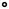

<!doctype html>
<html lang="en">
    <head>
        <meta charset="utf-8">
        <meta http-equiv="X-UA-Compatible" content="IE=edge">
        <meta name="viewport" content="initial-scale=1,user-scalable=no,maximum-scale=1,width=device-width">
        <meta name="mobile-web-app-capable" content="yes">
        <meta name="apple-mobile-web-app-capable" content="yes">
        <link rel="stylesheet" href="css/leaflet.css">
        <link rel="stylesheet" href="css/L.Control.Layers.Tree.css">
        <link rel="stylesheet" href="css/qgis2web.css">
        <link rel="stylesheet" href="css/fontawesome-all.min.css">
        <link rel="stylesheet" href="css/MarkerCluster.css">
        <link rel="stylesheet" href="css/MarkerCluster.Default.css">
        <style>
        html, body, #map {
            width: 100%;
            height: 100%;
            padding: 0;
            margin: 0;
        }
        </style>
        <title></title>
    </head>
    <body>
        <div id="map">
        </div>
        <script src="js/qgis2web_expressions.js"></script>
        <script src="js/leaflet.js"></script>
        <script src="js/L.Control.Layers.Tree.min.js"></script>
        <script src="js/leaflet.rotatedMarker.js"></script>
        <script src="js/leaflet.pattern.js"></script>
        <script src="js/leaflet-hash.js"></script>
        <script src="js/Autolinker.min.js"></script>
        <script src="js/rbush.min.js"></script>
        <script src="js/labelgun.min.js"></script>
        <script src="js/labels.js"></script>
        <script src="js/leaflet.markercluster.js"></script>
        <script src="data/PostcardsfromtheGulf_1.js"></script>
        <script>
        var highlightLayer;
        function highlightFeature(e) {
            highlightLayer = e.target;

            if (e.target.feature.geometry.type === 'LineString' || e.target.feature.geometry.type === 'MultiLineString') {
              highlightLayer.setStyle({
                color: '#ffff00',
              });
            } else {
              highlightLayer.setStyle({
                fillColor: '#ffff00',
                fillOpacity: 1
              });
            }
        }
        var map = L.map('map', {
            zoomControl:false, maxZoom:28, minZoom:1
        }).fitBounds([[30.207749514919353,-91.42850175698386],[32.36006356511291,-88.41396551198385]]);
        var hash = new L.Hash(map);
        map.attributionControl.setPrefix('<a href="https://github.com/tomchadwin/qgis2web" target="_blank">qgis2web</a> &middot; <a href="https://leafletjs.com" title="A JS library for interactive maps">Leaflet</a> &middot; <a href="https://qgis.org">QGIS</a>');
        var autolinker = new Autolinker({truncate: {length: 30, location: 'smart'}});
        // remove popup's row if "visible-with-data"
        function removeEmptyRowsFromPopupContent(content, feature) {
         var tempDiv = document.createElement('div');
         tempDiv.innerHTML = content;
         var rows = tempDiv.querySelectorAll('tr');
         for (var i = 0; i < rows.length; i++) {
             var td = rows[i].querySelector('td.visible-with-data');
             var key = td ? td.id : '';
             if (td && td.classList.contains('visible-with-data') && feature.properties[key] == null) {
                 rows[i].parentNode.removeChild(rows[i]);
             }
         }
         return tempDiv.innerHTML;
        }
        // add class to format popup if it contains media
		function addClassToPopupIfMedia(content, popup) {
			var tempDiv = document.createElement('div');
			tempDiv.innerHTML = content;
			if (tempDiv.querySelector('td img')) {
				popup._contentNode.classList.add('media');
					// Delay to force the redraw
					setTimeout(function() {
						popup.update();
					}, 10);
			} else {
				popup._contentNode.classList.remove('media');
			}
		}
        var zoomControl = L.control.zoom({
            position: 'topleft'
        }).addTo(map);
        var bounds_group = new L.featureGroup([]);
        function setBounds() {
        }
        map.createPane('pane_Basemap_0');
        map.getPane('pane_Basemap_0').style.zIndex = 400;
        var layer_Basemap_0 = L.tileLayer('http://services.arcgisonline.com/ArcGIS/rest/services/Canvas/World_Dark_Gray_Base/MapServer/tile/{z}/{y}/{x}', {
            pane: 'pane_Basemap_0',
            opacity: 1.0,
            attribution: '',
            minZoom: 1,
            maxZoom: 28,
        });
        layer_Basemap_0;
        map.addLayer(layer_Basemap_0);
        function pop_PostcardsfromtheGulf_1(feature, layer) {
            layer.on({
                mouseout: function(e) {
                    for (var i in e.target._eventParents) {
                        if (typeof e.target._eventParents[i].resetStyle === 'function') {
                            e.target._eventParents[i].resetStyle(e.target);
                        }
                    }
                },
                mouseover: highlightFeature,
            });
            var popupContent = '<table>\
                    <tr>\
                        <td class="visible-with-data" id="Used" colspan="2"><strong>Was the postcard used</strong><br />' + (feature.properties['Used'] !== null ? autolinker.link(String(feature.properties['Used']).replace(/'/g, '\'').toLocaleString()) : '') + '</td>\
                    </tr>\
                    <tr>\
                        <td class="visible-with-data" id="Place_Front" colspan="2"><strong>Front of postcard location</strong><br />' + (feature.properties['Place_Front'] !== null ? autolinker.link(String(feature.properties['Place_Front']).replace(/'/g, '\'').toLocaleString()) : '') + '</td>\
                    </tr>\
                    <tr>\
                        <td class="visible-with-data" id="From_" colspan="2"><strong>City postcard was sent from</strong><br />' + (feature.properties['From_'] !== null ? autolinker.link(String(feature.properties['From_']).replace(/'/g, '\'').toLocaleString()) : '') + '</td>\
                    </tr>\
                    <tr>\
                        <td class="visible-with-data" id="To" colspan="2"><strong>Location where the postcard was sent to</strong><br />' + (feature.properties['To'] !== null ? autolinker.link(String(feature.properties['To']).replace(/'/g, '\'').toLocaleString()) : '') + '</td>\
                    </tr>\
                    <tr>\
                        <td class="visible-with-data" id="Year_Sent" colspan="2"><strong>Year of sending</strong><br />' + (feature.properties['Year_Sent'] !== null ? autolinker.link(String(feature.properties['Year_Sent']).replace(/'/g, '\'').toLocaleString()) : '') + '</td>\
                    </tr>\
                </table>';
            var content = removeEmptyRowsFromPopupContent(popupContent, feature);
			layer.on('popupopen', function(e) {
				addClassToPopupIfMedia(content, e.popup);
			});
			layer.bindPopup(content, { maxHeight: 400 });
        }

        function style_PostcardsfromtheGulf_1_0(feature) {
            if (feature.properties['Year_Sent'] >= 0.000000 && feature.properties['Year_Sent'] <= 0.000000 ) {
                return {
                pane: 'pane_PostcardsfromtheGulf_1',
                radius: 2.0,
                opacity: 1,
                color: 'rgba(0,0,0,1.0)',
                dashArray: '',
                lineCap: 'butt',
                lineJoin: 'miter',
                weight: 2.0,
                fill: true,
                fillOpacity: 1,
                fillColor: 'rgba(255,255,255,1.0)',
                interactive: true,
            }
            }
            if (feature.properties['Year_Sent'] >= 0.000000 && feature.properties['Year_Sent'] <= 1920.000000 ) {
                return {
                pane: 'pane_PostcardsfromtheGulf_1',
                radius: 5.5,
                opacity: 1,
                color: 'rgba(0,0,0,1.0)',
                dashArray: '',
                lineCap: 'butt',
                lineJoin: 'miter',
                weight: 2.0,
                fill: true,
                fillOpacity: 1,
                fillColor: 'rgba(255,255,255,1.0)',
                interactive: true,
            }
            }
            if (feature.properties['Year_Sent'] >= 1920.000000 && feature.properties['Year_Sent'] <= 1940.000000 ) {
                return {
                pane: 'pane_PostcardsfromtheGulf_1',
                radius: 9.0,
                opacity: 1,
                color: 'rgba(0,0,0,1.0)',
                dashArray: '',
                lineCap: 'butt',
                lineJoin: 'miter',
                weight: 2.0,
                fill: true,
                fillOpacity: 1,
                fillColor: 'rgba(255,255,255,1.0)',
                interactive: true,
            }
            }
            if (feature.properties['Year_Sent'] >= 1940.000000 && feature.properties['Year_Sent'] <= 1954.000000 ) {
                return {
                pane: 'pane_PostcardsfromtheGulf_1',
                radius: 12.5,
                opacity: 1,
                color: 'rgba(0,0,0,1.0)',
                dashArray: '',
                lineCap: 'butt',
                lineJoin: 'miter',
                weight: 2.0,
                fill: true,
                fillOpacity: 1,
                fillColor: 'rgba(255,255,255,1.0)',
                interactive: true,
            }
            }
            if (feature.properties['Year_Sent'] >= 1954.000000 && feature.properties['Year_Sent'] <= 1971.000000 ) {
                return {
                pane: 'pane_PostcardsfromtheGulf_1',
                radius: 16.0,
                opacity: 1,
                color: 'rgba(0,0,0,1.0)',
                dashArray: '',
                lineCap: 'butt',
                lineJoin: 'miter',
                weight: 2.0,
                fill: true,
                fillOpacity: 1,
                fillColor: 'rgba(255,255,255,1.0)',
                interactive: true,
            }
            }
        }
        map.createPane('pane_PostcardsfromtheGulf_1');
        map.getPane('pane_PostcardsfromtheGulf_1').style.zIndex = 401;
        map.getPane('pane_PostcardsfromtheGulf_1').style['mix-blend-mode'] = 'lighten';
        var layer_PostcardsfromtheGulf_1 = new L.geoJson(json_PostcardsfromtheGulf_1, {
            attribution: '',
            interactive: true,
            dataVar: 'json_PostcardsfromtheGulf_1',
            layerName: 'layer_PostcardsfromtheGulf_1',
            pane: 'pane_PostcardsfromtheGulf_1',
            onEachFeature: pop_PostcardsfromtheGulf_1,
            pointToLayer: function (feature, latlng) {
                var context = {
                    feature: feature,
                    variables: {}
                };
                return L.circleMarker(latlng, style_PostcardsfromtheGulf_1_0(feature));
            },
        });
        var cluster_PostcardsfromtheGulf_1 = new L.MarkerClusterGroup({showCoverageOnHover: false,
            spiderfyDistanceMultiplier: 2});
        cluster_PostcardsfromtheGulf_1.addLayer(layer_PostcardsfromtheGulf_1);

        bounds_group.addLayer(layer_PostcardsfromtheGulf_1);
        cluster_PostcardsfromtheGulf_1.addTo(map);
        var overlaysTree = [
            {label: 'Postcards from the Gulf<br /><table><tr><td style="text-align: center;"></td><td>Not Sent</td></tr><tr><td style="text-align: center;"></td><td>Before 1920</td></tr><tr><td style="text-align: center;"></td><td>1920 - 1940</td></tr><tr><td style="text-align: center;"></td><td>1940 - 1975</td></tr><tr><td style="text-align: center;"></td><td>After 1975</td></tr></table>', layer: cluster_PostcardsfromtheGulf_1},
            {label: "Basemap", layer: layer_Basemap_0, radioGroup: 'bm' },]
        var lay = L.control.layers.tree(null, overlaysTree,{
            //namedToggle: true,
            //selectorBack: false,
            //closedSymbol: '&#8862; &#x1f5c0;',
            //openedSymbol: '&#8863; &#x1f5c1;',
            //collapseAll: 'Collapse all',
            //expandAll: 'Expand all',
            collapsed: true,
        });
        lay.addTo(map);
        setBounds();
        </script>
    </body>
</html>
